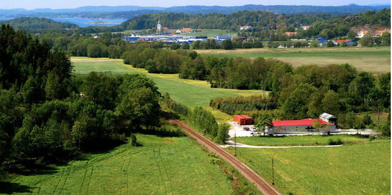

扫扫二维码
了解跟多精彩信息
虽然北欧国家的整体经济状况较好，但是在世界范围的金融危机下，难以独善其身。冰岛在金融危机后最先倒下，丹麦的整体经济状况受到严重影响，瑞典和芬兰也被迫调整长期以来引以为豪的福利政策。
北欧的丹麦、瑞典、芬兰、挪威和冰岛这五个国家的贫富差距不大，以丹麦为例，大学教授税后月收入在5万丹麦克朗，出租车司机和秘书的税后月收入在3万丹麦克朗左右。这些国家中，富翁不多，穷人也不多，占人口比例最高的是中产阶级，中产阶级占人口的比重为55%，是世界上中产阶级队伍最庞大的国家之一。整个社会结构呈标准的橄榄核型，十分稳定。由于工资水平和社会福利水平高，一个家庭只要有一个人正式就业，就可以达到中产阶级的生活水平。北欧普遍通过征税实行转移支付。以丹麦为例，纳税人所交纳的平均所得税，最低的比例要达到其收入的36%，大公司的经理等高收入人群，几乎要交60%到70%的个人所得税，较高的税率，为各种福利提供了资金保障。

大约70年前，欧洲国家的福利制度按照行业划分，即不同行业和群体拥有各自特权的不同养老金和福利制度。二战后，欧洲各国都开始对这种制度进行改革。北欧国家有着小国寡民的特点，容易调整。这些国家工会的集中度较高，在政府与工会协商时容易达成一致，改革进程较为容易，由改革引发的社会运动较少，即使偶尔发生，也较为温和，并不像西欧那么激烈。这几个国家建立起统一制度，所有社保政策和法定退休年龄全国一致，不存在群体之间的差异性和相互攀比。
近年来，北欧国家已经在逐渐改革自己的福利制度。金融危机加速了这一进程。以芬兰为例，为避免高福利的社会保障滋生不劳而获者，提高社会整体效率，芬兰在保障公民基本生存权利和发展条件的同时，要求居民享受社会保障的程度是合理的和满足基本需要的；这些社会保障措施在满足公民生存基本需要的同时，能够激发其劳动热情和创造性等。瑞典也在进行类似的改革。
通过这些年来的改革，北欧政治家认识到，改革持续了半个多世纪的福利制度并非一蹴而就的事情。在选举政治的大背景下，政府高度重视选民的选票。对于政府来说，如果大幅调整国家的福利制度，带来的将是选票的大量流失。北欧国家的政府处在一个两难的境地，为争取选民，不到万不得已不会削减福利政策。这为解决金融危机带来的问题，设置了障碍。